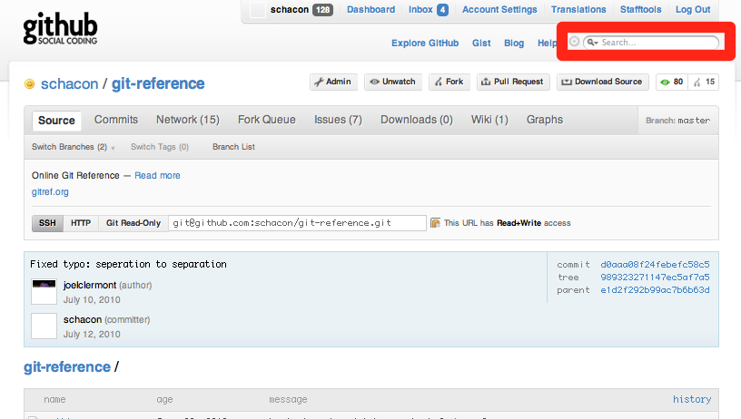

Git
Presenter Notes
Ryan Brown
Programmer, Git User
ryansb@csh.rit.edu
github.com/ryansb
gplus.to/ryansb
Presenter Notes
what is VCS?
- version control system
- control changes
- know what changed, when, and who did it
- share it
Presenter Notes
centralized
Presenter Notes
distributed
Presenter Notes
centralized
- SVN, RCS, Clearcase
- store diffs
- central database
Presenter Notes
distributed
- Git, Mercurial
- store blobs
- everyone has a copy of the database
- can have many remotes
- no final authority
- locally
Presenter Notes
why care?
- concurrency, simply
- easy merges
- fast collaboration
Presenter Notes
why Git?
- simple design
- fully distributed
- easily handle massive projects (linux)
- cheap branching
- flexibility
Presenter Notes
first, clear your mind
Presenter Notes
Git is fast
- almost everything is local
- work on planes, trains, and automobiles
- upload when you can
Presenter Notes
a commit is...
- snapshot, not a diff
- takes up more space, but bits are cheap
- acts almost like a mini filesystem
- store links to files that haven't changed
- refer to commits by checksums (not names)
Presenter Notes
how to stop worrying
- Git generally only adds data
- it's hard to lose things once committed
- almost always possible to roll back changes
Presenter Notes
a commit has...
- a checksum
- a list of all blobs contained in the commit
- a comment (please use these)
Presenter Notes
three stages of Git
| working | staging | repo |
|---|---|---|
| uncommitted | preparing to commit | committed |
Presenter Notes
basic workflow
- one: make some changes
- two: stage snapshots of files
- three: commit
- four: (eventually) push
Presenter Notes
getting started
1 $ mkdir mynewproject
2 $ cd mynewproject
3 $ git init
4 Initialized empty Git repository in
5 /home/ryansb/mynewproject/.git/
6 $ vim README
7 $ git status
8 # Initial commit
9 #
10 # Untracked files:
11 # (use "git add <file>..." to include in what will
12 # be committed)
13 #
14 # README
15 nothing added to commit but untracked files present
16 (use "git add" to track)
17 $ git add README
Presenter Notes
life cycle of a file
- untracked
- tracked
- modified
- staged
- committed
Presenter Notes
status report
1 $ git status
2 # Initial commit
3 #
4 # Changes to be committed:
5 # (use "git rm --cached <file>..." to unstage)
6 #
7 # new file: README
8 $ vim README
9 $ git status
10 # Initial commit
11 #
12 # Changes to be committed:
13 # (use "git rm --cached <file>..." to unstage)
14 #
15 # new file: README
16 #
17 # Changes not staged for commit:
18 # (use "git add <file>..." to update what will
19 # be committed)
20 # (use "git checkout -- <file>..." to discard
21 # changes in working directory)
22 #
23 # modified: README
Presenter Notes
making commitments
1 $ git commit -m "Added README"
2 [master (root-commit) 4f3ea33] Added README
3 1 files changed, 1 insertions(+), 0 deletions(-)
4 create mode 100644 README
5 <Do more commits>
6 $ git log
7 commit 773c3104e641a9a86d71a99d67d113abf5709b81
8 Author: Ryan Brown <ryansb@csh.rit.edu>
9 Date: Sat Nov 26 18:21:35 2011 -0500
10
11 added hello.py
12
13 commit 7275078f623c043cf5a22e552b4fd503c3236471
14 Author: Ryan Brown <ryansb@csh.rit.edu>
15 Date: Sat Nov 26 18:20:45 2011 -0500
16
17 More verbosity for the README
18
19 commit 4f3ea3369e9a0b29e41f7aef325a27b62e7938b1
20 Author: Ryan Brown <ryansb@csh.rit.edu>
21 Date: Sat Nov 26 18:19:07 2011 -0500
22
23 Added README
Presenter Notes
see what changed
- use 'git diff'
- by default diffs current working dir with most recent commit
- super useful, check out 'git diff --help'
Presenter Notes
1 $ vim hello.py
2 $ git diff
3 diff --git a/hello.py b/hello.py
4 index 3148dce..33f348b 100644
5 --- a/hello.py
6 +++ b/hello.py
7 @@ -1,3 +1,3 @@
8 #!/usr/bin/env python
9
10 -print "hello world"
11 +print "Hello, world!"
12 $ git commit -am "Fixed up grammar in hello.py"
13 [master 01ee7f3] Fixed up grammar in hello.py
14 1 files changed, 1 insertions(+), 1 deletions(-)
Presenter Notes
saving keystrokes
- sometimes add -> commit gets annoying
- the '-a' option stages all modifications
- but ensure you want to commit it all
Presenter Notes
check it out
1 $ git log --pretty=oneline --abbrev-commit --decorate
2 1c8ce74 (HEAD, origin/newgitseminar, newgitseminar) Added more on branching
3 4afbe50 Added slides for branching
4 151dd2f Finished converting to vanilla markdown
5 5e130da Added git seminar to front page
6 d219f44 New Git seminar via Landslide now working
7 dfbc19c (origin/master, origin/HEAD, master) Changed length of excerpt
8
9 # specify a branch that is on the remote named 'origin'
10 $ git checkout origin/master
11 # specify a branch name
12 $ git checkout master
13 # specify commit ID (or hash)
14 $ git dfbc19c
15 # specify a commit that is 5 commits prior to where HEAD is
16 $ git checkout HEAD~5
All those checkouts go to the same commit
Presenter Notes
check out a specific file
1 # get the older version of file 'filename'
2 $ git checkout -- filename
3 # throw away all local changes and switch to branch 'master'
4 $ git checkout -f master
Presenter Notes
branching
Presenter Notes
branching
- lightweight (creating a branch requires 40 bytes of space)
- pointers to different commits
- conveneint ways to separate tasks and features
Presenter Notes
develop asynchronously
* 5a376b1 - Merge branch 'master' of github.com:boto/boto
|\
| * 2f03097 - Adding ref/dynamodb to hidden TOC.
| * 649bad2 - Merging in @rdodev's DynamoDB tutorial and adapting it for Layer2
| |\
| | * d5defb8 - Little changes
| | * 0a5046c - Starting point. We can add more details later on.
| | * a99fb2e - Grammar fix
| | * d5d3edb - Minor redaction edits
| | * e5a397f - Merge branch 'master' of git@github.com:rdodev/boto.git
| | |\
| | | * 8c19b40 - Fixing code example
| | * | f35a84d - Added subsections
merge branches whenever
Presenter Notes
working with branches
push one of your branches up to a remote
1 $ git push origin testfeature:experimental
it's trivial to pull in the remotes of other collaborators
1 $ git checkout --track -b bacon rick/grill
2 $ git checkout -t bacon rick/grill
to display all local branches
1 $ git branch
2 master
3 * newgitseminar
4 truncatehtml
5 vanilla_960
Presenter Notes
starting with branches

get a branch
1 $ git checkout branchname
create a new branch with name branchname
1 $ git checkout -b branchname
Presenter Notes
github.com

Presenter Notes
find a project

Presenter Notes
800,000 original projects
1 >> Repository.count(:conditions =>
2 { :parent_id => nil, :public => 1 })
3 => 805411
Presenter Notes
be part of a community
Presenter Notes
contribute back
- fork
- commit
- push
- (pull request)
Presenter Notes
get the code
1 $ git clone git://github.com/some1/project
2 Cloning into project...
3 $ cd project/
4 $ vim README
5 $ git commit -am 'made it better'
6 [master dbeb245] made it better
7 1 files changed, 2 insertions(+), 0 deletions(-)
8 $ (fork it on github)
9 $ git remote add myfork git@github.com:you/project.git
10 $ git push myfork master:feature_name
11 ...
12 To git@github.com:you/project.git
13 9457e38..dbeb245 master -> feature_name
improve someone else's repo, in just one minute
Presenter Notes
remember that cheap branching?
Presenter Notes
Presenter Notes
cheap contributions
Presenter Notes
overview
- use git[hub]
- fast
- flexible
- simple